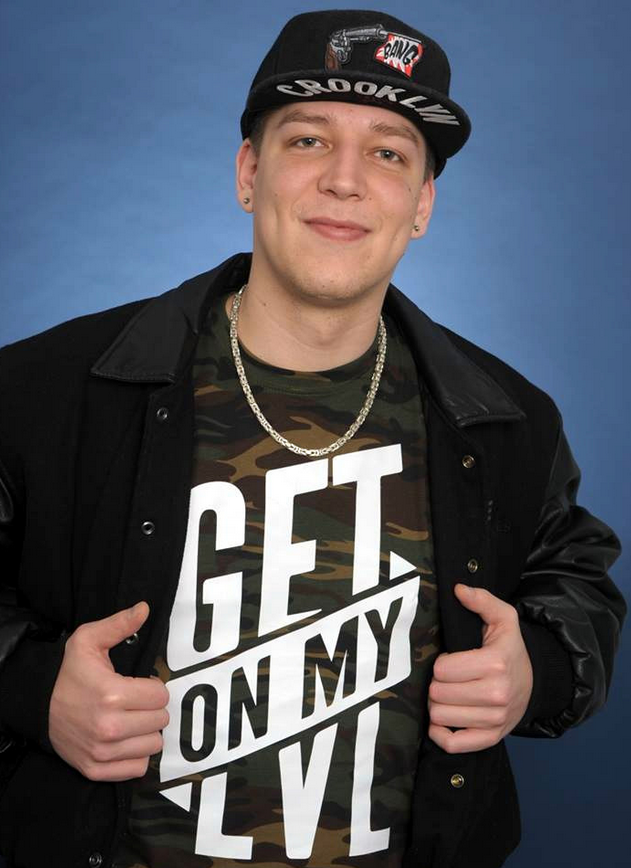

Biografie
MontanaBlack (* 2. März 1988 in Buxtehude; bürgerlich Marcel Thomas Andreas Eris;
kurz auch Monte) ist ein deutsch-türkischer Webvideoproduzent und Livestreamer,
der sich in seinen Auftritten hauptsächlich mit Videospielen wie z. B.
Call of Duty, FIFA und Fortnite und IRL-Live-Streams beschäftigt.
Seine Videos veröffentlicht er mehrmals pro Woche auf YouTube und überträgt
über Twitch seine Livestreams. Seit 2018 ist er einer der populärsten
deutschsprachigen Gaming-Livestreamer.
